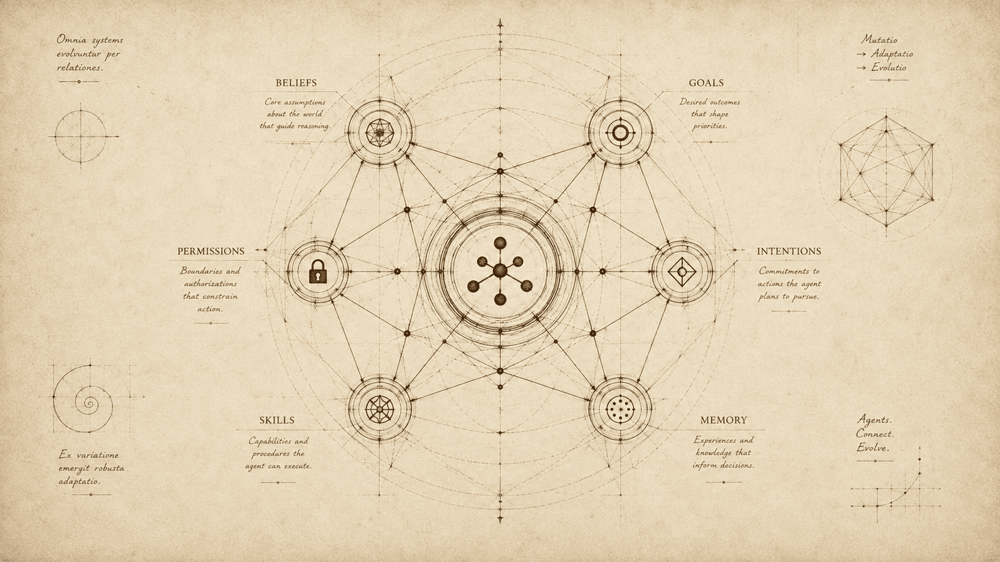
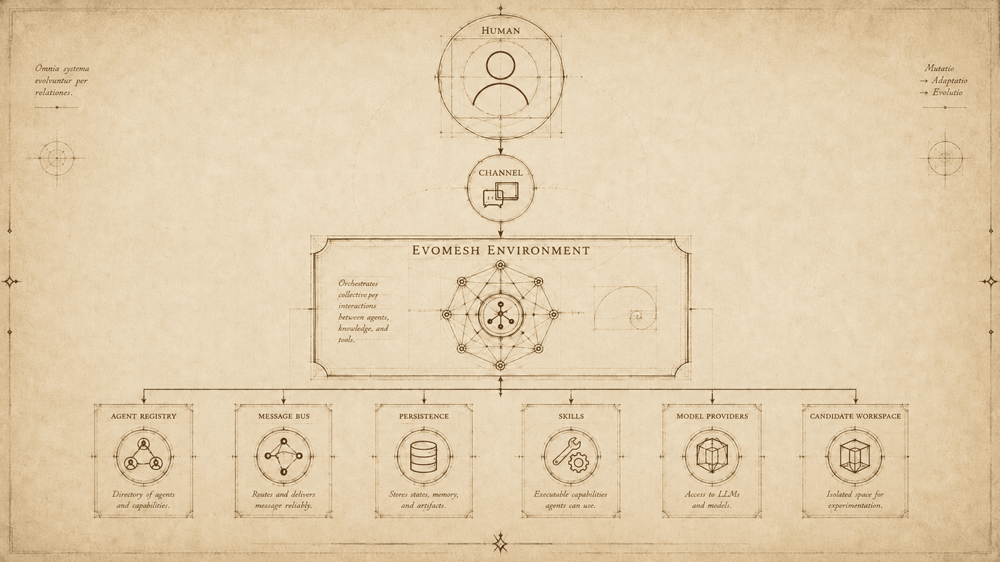
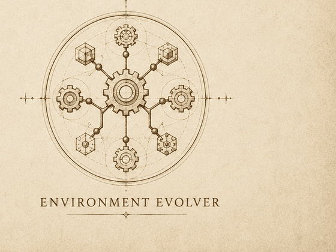
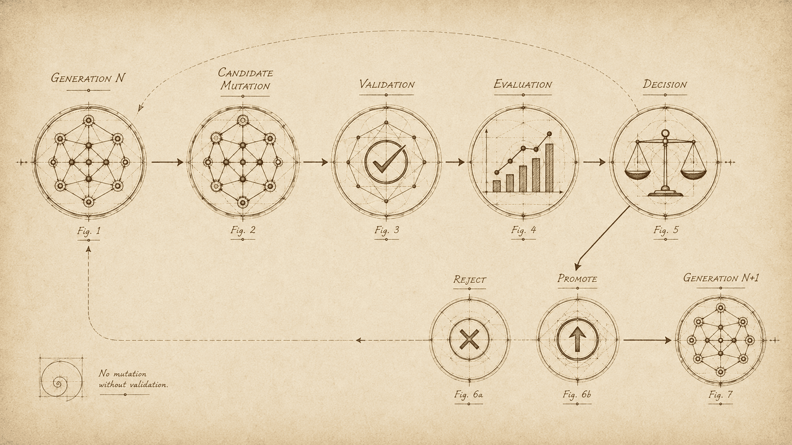

Figura I
Agent Architect
Turns one sentence from a human into a complete, working agent definition. Reactive: it never invents agents nobody asked for.
A local-first environment where persistent agents live, deliberate over their own beliefs and intentions, acquire reusable skills, and evolve in isolated generations — on your machine, against your models, under your review.

What EvoMesh is, and what it refuses to be.
EvoMesh is an experimental, open-source multi-agent runtime for local models. It is not a cloud service, and an agent here is not a prompt with a name. The environment owns agent lifecycle, messaging, persistent state, skills, permissions, model access, health, and evolutionary history. Agents talk through the environment rather than through private network endpoints.
Most agent frameworks treat an agent as a function call wrapped around an API. EvoMesh treats it as a resident: something with a mind that persists between runs, goals it returns to, a memory written to disk you can read with any text editor, and a generational path for improving the runtime it lives in.
The environment is explicit application state, not a global singleton. SQLite access sits behind a repository. Model and channel contracts are replaceable. Generation supervisor metadata deliberately lives outside the candidate workspaces it describes.
Human ──▶ Channel ──▶ EvoMesh Environment
├─ Agent registry and lifecycle
├─ Async message bus and mailboxes
├─ SQLite persistence
├─ Workspace ──▶ memory.md / context.md
├─ Skill registry ──▶ filesystem policy
├─ Local model providers
└─ Candidate workspace ──▶ validation
Every agent runs two loops:
mailbox loop inbound message ──▶ budgeted prompt ──▶ reply
cycle loop perceive ──▶ revise beliefs ──▶ reconsider ──▶ execute one plan step
Supervisor metadata: ACTIVE ◀──▶ LAST-KNOWN-GOOD ──▶ CANDIDATEFrom clone to a mesh that is already thinking.
Install Python 3.13+, Git, uv, and optionally Ollama.
git clone https://github.com/Dev-Art-Solutions/EvoMesh.git
cd EvoMesh
uv sync
cp evomesh.yaml.example evomesh.yaml
uv run evomesh
On PowerShell replace cp with Copy-Item. The mesh still reaches
READY when the model endpoint is unavailable and reports what must be fixed;
inference waits for a healthy provider, and the deterministic system agents keep reasoning
without one.
On Windows, double-click start-evomesh.bat to synchronize the environment and open
the WinForms Control Center: start and stop the mesh, attach to an already-running local mesh
over the localhost control channel, chat and issue slash commands, run Agent Architect, assign a
different provider and model per agent, and edit evomesh.yaml while stopped. Use
start-evomesh-console.bat for the terminal. Only one Control Center runs per
checkout at a time — a second launch against the same data is refused with a short message
instead of opening a competing window, an OS-level lock held for the process's whole life, the
same protection the mesh process itself already has.
Either launcher dies with its own window, which a machine that sleeps or a person who logs out
eventually does. scripts/install-services.ps1 (elevated, once) registers EvoMesh and
its local Ollama as NSSM Windows services — auto-start at boot, no session required, and a crash
restarted on top of the mesh's own exit-code-86 restart contract. Headless supervision without
the service manager is scripts/run-supervised.ps1: the same restart loop, run from
any shell willing to stay open. scripts/uninstall-services.ps1 reverses it.
The world the agents are residents of.
The explicit Environment service coordinates registry, lifecycle, message bus,
persistence, skills, grants, providers, workspace, and health. It boots the four system
agents — Agent Architect, Guardian, Evaluator, and Environment Evolver — and restores user
agents from SQLite with their minds intact.

Every agent owns an asynchronous mailbox. Direct and broadcast messages carry conversation and correlation identifiers and are persisted before delivery. SQLite migrations create durable records for agents, messages, skills, assignments, grants, environment state, and mutation history. Agent business logic never calls another agent object directly.
The environment regenerates workspace/context.md: the roster, each agent's phase
and current goal, and the evolution stage. Every agent can read it, which is how an agent knows
what the rest of the mesh is doing without anyone broadcasting it.
Residents with a lifecycle, a mind, and a job.
Agens: qui agit. The one who acts.
An agent definition contains stable identity, type, generation and parentage, purpose, provider and model, mind state, skills, permissions, memory behaviour, autonomy, cycle interval, lifecycle status, and timestamps. At runtime it holds two loops: a mailbox loop that answers messages, and a cycle loop that advances its own goals whether or not anyone is watching. Both share a lock, because a small local model answering two requests for the same agent at once produces an answer made of half a deliberation.
Turns one sentence from a human into a complete, working agent definition. Reactive: it never invents agents nobody asked for.
Perceives provider health and every agent's phase, and wants degradation investigated. Deterministic: it needs no model at all.
Reads the newest candidate's validation record and reports the verdict — including that a candidate has not been validated at all.

Opens a candidate generation, proposes one mutation, validates it, and hands it to you. One stage per cycle, one candidate at a time.
Two different questions deserve two different fields, and conflating them is how a roster starts lying to you.
| Field | Question it answers | Values |
|---|---|---|
| status | Should this agent be running? Persisted. | candidate, active, stopped |
| phase | What is it doing right now? Rebuilt every boot, never trusted from disk. | offline, starting, idle, thinking, acting, waiting-human, error |
An agent that cannot start is reported offline with the reason, rather than returning as active with no loop behind the label.
Guardian [system] active/idle ollama:qwen3 cycles=4
goal: Keep a current picture of mesh health and report anything degraded.
last: mesh healthy, provider ready
Environment Evolver [system] active/waiting-human ollama:qwen3 cycles=4
goal: Improve EvoMesh by one validated candidate generation at a time.
last: generation 2 is waiting for a human to promote or discard it
You can simply ask it, in chat, and the answer is not the model guessing at its own life. Every
reply is prompted with a CURRENT WORK block the runtime fills in as the message
arrives: phase, cycles completed, the goal and the plan step in hand, the last finished step, the
last error, and how long until the next cycle. The runtime owns those facts; the model only
phrases them.
A behavior that drives a pipeline of its own adds to that block. Ask the Environment Evolver and you get the live stage, the candidate generation, the objective, the file it changed, the candidate workspace and the validation verdict — read at the moment you ask, rather than remembered from the last cycle, which may be a full interval old.
evomesh> /chat evolver
evomesh> what are you working on?
Environment Evolver> Generation 4 is open for "Improve EvoMesh by one validated
candidate generation at a time". I am on the validate step, running sync, ruff,
pyright, pytest and the smoke test; nothing is promoted yet.
runtime.cycle_seconds is the agent's own heartbeat, shared by every message and
every other goal it has — slowing it down to satisfy one goal that only needs hourly
attention would starve everything else in between it. A goal can carry a schedule of its
own instead, in one of two shapes, and the agent's own cadence never changes either way.
/goal add "Scraper" "Check example.com for changes" 5 3600
/goal add "Scraper" "Send the daily digest" 5 "0 9 * * *"
The first re-checks every 3600 seconds after it last finished; the second fires at 09:00
UTC every day, the standard five-field minute hour day month weekday form,
matched by a small dependency-free parser rather than a new package. A cron goal does not
run the instant it is added — it waits for its first scheduled time, the way a real cron
job would. Either way, next_goal() simply skips the one still waiting in favour
of whatever else is open, so a chat reply or another goal is never behind it in the queue.
/goal notify <agent> <id> [on|off] makes one goal push its own finish
rather than wait to be asked. It reaches Telegram as it happens and, for a connection with
no push of its own, is pulled with /notifications [since-id], the same cursor
the desktop Control Center polls on its existing health check.
An agent's own volume is a separate knob from any one goal's notify flag —
/agent mute <agent> silences everything it announces unprompted, mesh-wide
channel and its own private bot alike, without touching whether it runs or what its goals are.
/agent unmute <agent> restores it, and /agents marks a muted
agent inline. Useful for an agent that is doing exactly what it should on a schedule short
enough to be noise for a human — NewsWatcher's feed sweep, say — where the fix is not turning
the goal off, only turning the narration down.
Run /chat architect and describe what you need in one sentence. Architect derives the
name, purpose, constraints, filesystem access, skills, and provider/model from that sentence,
gives the local model a single optional pass to improve the wording, and shows you a complete
draft. It does not interview you. Refine it by saying what to change.
evomesh> /chat architect
evomesh> read my markdown notes in D:/notes and write a weekly summary
Draft ready.
name: Note Reader
purpose: read my markdown notes in D:/notes and write a weekly summary
model: ollama:qwen3
skills: none
access: D:/notes
first goal: read my markdown notes in D:/notes and write a weekly summary
evomesh> name: Scout
evomesh> /confirm
Agents declare what they can do. System agents come with their capabilities; a template names
its own under capabilities:, or they are derived from the tools it bundles. A
declared capability is a routing fact, never a permission — it grants nothing.
Work moves between agents as a structured work item — an objective, its inputs,
expected outputs, success conditions and a budget — carried by performatives the runtime reads
without a model: delegate, accept, reject,
result, failure, help_request. Who gets it is a Contract
Net award: capability match, current load and past success. An accepted delegation becomes a
goal on the receiver, ahead of its standing work; finishing it sends a result back
to the requester and closes the work item, and failing it sends a failure and
spends budget.
When an agent stalls, the mesh asks for help on its own: a diagnosis is delegated to whoever
holds health.verify — the Guardian — which answers from runtime state with no
model call and sends the finding back. One request per stall, expired after an hour, and
cancelled if the stalled goal finishes after all.
Agents share a blackboard instead of telling each other things in conversation: every
revised belief becomes a fact with its source (Guardian.mesh.degraded), every file
a harness job writes becomes an artifact, and open work items are listed there too. It is
bounded, persisted across restarts, and part of every agent's view of the world.
Beliefs, desires, intentions — the loop, not the vocabulary.
De mente machinae
Agents run the Rao and Georgeff practical-reasoning interpreter. This is the actual control flow of a cycle, not a set of BDI-shaped fields sitting beside an ordinary prompt loop.
percepts := perceive()
B := brf(B, percepts) revise beliefs
D := options(B, I) which goals are worth having
I := filter(B, D, I) commit to one, with a plan
execute one step of that plan
drop I when achieved, or when it became impossibleTwo properties make this BDI rather than a loop with flattering names. An agent that re-decides everything every tick has no intentions, only impulses. An agent that never re-decides is blind to a world that moved. EvoMesh commits, and reconsiders on evidence.
Beliefs are keyed, so a new percept revises the belief it contradicts instead of
stacking a near-duplicate beside it. Guardian holds provider.ready and
mesh.degraded; the Evolver holds evolution.stage. Beliefs come only
from perception — what an agent concludes during a cycle is durable memory, not a percept, and
the two are kept apart on purpose.
provider.ready: the model provider is ready (environment)
mesh.degraded: all 5 agents are running (environment)
Desires are goals, ranked by priority. New ones are derived from what an agent now believes,
by a rule rather than by a prompt: when Guardian perceives that an agent stopped, its
investigate-degradation rule fires on that belief changing, and the
resulting goal outranks its routine sweep. When the mesh recovers, the investigation is
discharged rather than left open forever.
An intention is a commitment: a chosen plan, executed one step per cycle, across cycles, without re-deciding. It can also be held — a step is not consumed while the agent waits on something external, so a parked agent keeps one commitment instead of completing and re-adopting a plan every cycle it spends waiting.
[active] plan 'evolve-generation' for: Improve EvoMesh by one validated candidate generation
[x] open an isolated candidate generation
[x] propose and apply one mutation
[ ] validate the candidate
[ ] hand the candidate to the humanAn agent reconsiders only when something makes its commitment questionable:
That check is pure code and never calls a model. Which beliefs a plan depends on is a deliberate
design decision: the Evolver does not depend on evolution.stage,
because its own plan is what moves that stage — depending on it would make the agent abandon and
re-adopt its plan once per cycle. It depends on evolution.awaiting_human, which flips
only twice per pass. So /evolution discard is what makes the Evolver drop its held
plan and begin a fresh one, of its own accord.
Means-ends reasoning is a library lookup first, then a procedure the agent learned itself, and a model call only as the last fallback. Guardian, Evaluator, and the Evolver run entirely from their plan libraries, so the mesh keeps reasoning with no model reachable at all. A generic agent asks the model once to break a new goal into two to four steps, then spends the following cycles executing them.
A goal on a schedule — a cron expression or an interval, not a bare recurring flag —
skips the planning call outright and commits its own description as that single step, every
occurrence. It is an appointment kept the same way each time, not an essay prompt a small model
re-answers differently on every pass; a paraphrase that drifted the step away from the verb
naming its own tool was exactly how a goal that says "fetch the latest headlines with
news_fetch" could keep concluding there was nothing to fetch, occurrence after occurrence,
without the tool ever being called. A bare recurring goal with no schedule still re-plans with the model
on every pass, on purpose — it is asking to be reasoned about again, not kept on an appointment.
A goal is more than a sentence. It can depend on other goals and waits, blocked, until
they are done; it can carry explicit success and failure predicates — a belief holding a value,
an artifact existing, a validator passing, a human approving — so a plan that ran out of steps
does not close a goal whose predicate is still false. Selection is a transparent utility score
in which priority stays dominant, and every weight is a named number rather than prompt
wording. Failures have a retry policy with backoff and a budget, and a goal nobody has touched
for an hour shows up in /status as stale_goals.
Repeated failure is detected by code, not by a model reading its own transcript: the same failure three times, or four cycles with no new step, fact or artifact, is a stall — signalled once, on the cycle that crosses the threshold.
After belief revision and before deliberation, a small forward-chaining rule engine runs to a
fixed point, each rule at most once per cycle and never more than a bounded number in total. A
rule tests beliefs, goals and events — including a belief_changed event for every
belief revised this cycle, so a rule can react to a change rather than to a state — and may
assert a belief, propose a goal, emit an event onto the mesh bus, or request an action
(announce, wake). None of it calls a model.
Rules are data. A template declares them under rules:, /rules adds,
removes and lists them on a live agent, and a malformed one is refused where it is declared
rather than silently never firing. {belief:<key>} in a proposed goal or an
announcement is filled from the agent's beliefs when the rule fires.
rules:
- name: equity alarm
when:
- {source: belief, key: account.drawdown_pct, operator: greater_or_equal, value: 5}
then:
- {kind: propose_goal, key: risk, value: "Review open positions: {belief:account.summary}"}
- {kind: request_action, key: announce, value: "Drawdown past 5%"}
Every finished plan the model authored is kept as an execution trace, succeeded or failed, in
the agent's persisted mind. When the same plan for the same goal has succeeded three times
with no failure, it becomes a procedure, and the next time that goal comes up the agent
commits to the procedure instead of asking the model to plan again — the planning call is
simply not made. A human may approve a repeated plan sooner with
/procedures <agent> approve <pattern>; a procedure that starts failing
as often as half its successes is forgotten and the goal goes back to being planned.
Every model call goes through one gateway and carries a reason — no plan matched, a step needs
reasoning, a tool must be selected, memory is over budget — together with the agent, goal and
task it serves and the sizes going in and out. /status reports the totals by
service and by reason, next to how many goals finished without a single model call. It is how
the claim "the model is called only for genuinely novel work" stops being a claim.
For work the mesh already knows how to do, an agent does not plan with a model at all. It runs a
typed procedure: a small validated graph with seven step kinds (tool, cognitive, branch,
validate, delegate, await, complete), values that are bound rather than templated, and strictly
typed predicates where unknown fails instead of guessing. A definition is validated
before it can run. Unknown fields, cycles, a result used after a merge that only one branch
produced, an undeclared capability or an external effect are all refused up front. A revision is
immutable and approved by digest, by a human, never by a model.
Each cycle, an admitted procedure for the goal's kind comes before recipes, learned plans and model planning. Only a genuine no-match falls back to the model. A denied permission, an unapproved revision or an exhausted budget fails the goal instead of letting a model route around it. The goal is done when its own success conditions hold against the execution's evidence (validators, receipts), not when the graph runs out of steps.
read_source tool core.json_read path = goal.parameters.source
write_snapshot tool core.json_write path = goal.parameters.destination
value = result.read_source.value
check_snapshot validate artifact_matches_source (this occurrence's read, this run's receipt)
done complete { artifact_id, digest } -- 0 model calls
Every effect is journaled under a logical key before it runs, and every state change is a
compare-and-set. After a crash, a write that happened is reconciled from its receipt rather than
repeated; a write that did not happen is retried; an effect nobody can prove waits for an
operator's recheck, not_applied or fail. That includes a
process killed mid-write. Delegation is a durable child work item routed by capability to a
running peer that may read the same files, and a requester cannot hand away a read it does not
have. Waits re-read durable state, so an event that arrived early is not lost and waiting never
calls a model.
Procedures can also be learned, conservatively. Model-directed harness work gets
contract-backed json_read/json_write tools whose calls are recorded
against the goal they served. Three verified occurrences plus an operator's binding map (equal
values are never taken as data lineage) compile into a candidate. The candidate is replayed on a
held-out input and promoted only by a human. In the test run, three model-directed copies at 3
calls each became a procedure whose next run took none.
Typed execution is enabled.
local_json_snapshot@1 promoted source=shipped by operator:iliya kinds=local_json_snapshot
report_comparison@1 promoted source=shipped by operator:iliya kinds=report_comparisonMeasured at the architecture-closure commit: the snapshot workflow completes through a normal agent with 0 model calls; the report comparison, whose one semantic step is a schema-bound model call with every cited evidence id checked, uses exactly 1. On a local ornith-1.5:35b at 4k and 32k context, 18 of 18 runs of it completed on the first call.
Two Markdown files per agent, readable by any human.
Each agent owns two files under workspace/agents/<agent>/:
memory.md — durable facts it has learned, appended one line per cycle and compacted into a summary once it outgrows its budget.context.md — working context, rewritten every cycle with the current goal, the committed plan, its beliefs, the last outcome, the next step, open goals, and recent inbox.Both are plain Markdown on purpose. You can read them, edit them, or delete them while the mesh is running, and the agent picks the change up on its next cycle. A mind you cannot inspect is a mind you cannot debug.
Beside the two files, the agent's persisted mind keeps its structured memory apart by kind: beliefs (what it holds true now), bounded episodes (what happened), execution traces and the procedures learned from them (how it did things that worked). What agents know together lives on the blackboard, not in any one of them.
# Memory - Note Reader
Purpose: read my markdown notes in D:/notes and write a weekly summary
## Summary
Nothing compacted yet.
## Recent
- 2026-09-01T01:05Z (reflective) The notes folder contains 12 markdown files.
- 2026-09-01T01:06Z (reflective) Weekly summaries belong in D:/notes/summaries.Every prompt is assembled under a hard character budget, carrying identity, goal, current beliefs, the committed plan, memory, working context, and recent inbox in that order. This is the fix for agents that lost their memory partway through a goal: an oversized prompt is truncated by the model server from the oldest end — which is exactly where memory sits. Budgeting here means the trim is ours, and the newest facts always survive it.
A description an agent decides to read, and a command it can call directly.
Everything a skill could ever do already exists as a harness tool. A skill only ever adds the procedure for when to reach for which one.
A skill is a description, never a capability the mesh executes on an agent's behalf — the
same shape Claude Code itself uses. One skill is one directory under skills/, a
SKILL.md with YAML frontmatter (name, description)
over a Markdown body. SkillRegistry has no "run this skill" method: an agent
reaches one the same way it reaches any other file, with the harness's own read
tool, once render_catalog() has named it and where to read it in the job's task
text. The model decides whether reading it is worth a step; nothing here ever executes what
the file says.
---
name: web-research
description: Fetch a web page and use its content to answer a question, instead of guessing from memory.
---
Use the `fetch` tool. Do not answer from memory when a URL is available…
A skill's directory can hold scripts beside SKILL.md too — one or a group of
commands, named by the body for an agent to run with its own harness tools. Three ship with
the repo: web-research, wire-a-dead-module, and
validate-skill, whose bundled scripts/check.py checks a candidate
SKILL.md's frontmatter before installing it, using the identical rules the
installer enforces.
/skill install <path-or-url-or-directory> is the whole market mechanism: a
lone file, one fetched over HTTP, or a directory bundling scripts, all installed live, no
restart. A "skill builder" needs no new agent type — grant any agent harness write access to
skills/, give it a purpose that says to write one for a procedure it notices
repeating, and it already has everything /skill install has.
A skill is read on the model's own initiative; a tool is called directly, the way
read or fetch already are — a named, described, parameterized
affordance instead of a shell command line a small model has to construct correctly from
prose. tools/<name>/TOOL.md declares a command template and
named parameters; nothing here is Python loaded into the running process.
---
name: check-site
description: Check whether a URL responds, and how fast.
command: python "{tool_dir}/scripts/check.py"
parameters:
- name: url
description: The URL to check, including scheme (https://...).
required: true
---
A call shells out through the exact allow-listed subprocess path the shell tool
already uses — a parameter's value is appended as one more argument, never interpolated into
a string that gets re-parsed — so a custom tool can never run anything beyond what its own
command already names, and never anything at all unless that program is in
harness.shell_allow. {tool_dir} resolves to the tool's own absolute
directory, not the calling job's root: a harness job's root is whatever the job is about, a
non-system agent's own playground most of the time, never reliably this project's own tree.
/tools [query] lists installed tools and says which are active;
/tool install <path-or-url-or-directory> is the same one-step mechanism
/skill install already has.
document_read and document_write ship at the repository root as two
more custom tools, over the same TOOL.md mechanism check-site
demonstrates — the first pair with a real payload contract: one JSON request
parameter each, because a custom tool's optional parameters are only appended to its command
when actually supplied, so two or more of them can land in the wrong position unless collapsed
into one JSON object the script parses itself.
{
"path": "reports/news.pdf",
"title": "Latest headlines",
"headers": ["Headline", "Published"],
"rows": [["...", "..."], ["...", "..."]]
}
document_read extracts text or tabular content from a .docx,
.pdf, .xlsx/.xlsm, or .csv file, dispatched
by extension, and returns JSON — paragraphs and tables for a document, sheet names and rows for
a workbook. document_write goes the other way: a title, paragraphs and a table (or,
for a workbook, several named sheets) become a real file in one call. Both shell out to a
dedicated venv (scripts/install-docs-env.ps1 / .sh) rather than the
project's own — python-docx, openpyxl, pypdf and
reportlab are exactly the dependency weight the runtime's own five-dependency rule
keeps out, the same reasoning that already puts Scrapling in a venv of its own.
A skill or a tool is one capability; an agent template is a whole agent, bundled with the
skills and tools it needs, installable and instantiable as one unit. One template is one
directory under agent-templates/: an AGENT.md naming identity,
purpose, provider, autonomy, goals, the skills and tools to bundle — and, optionally, a
watch command — beside its own skills/* and tools/*.
---
name: trader
identity: Trader
purpose: Watch an MT5 account and execute a strategy only when asked.
autonomy: cyclic
cycle_seconds: 120
goals:
- text: Check account and open positions; note only what changed
recurring: true
interval_seconds: 300
skills: [trading-strategy]
tools: [mt5_query, mt5_signal]
watch:
command: python "{template_dir}/scripts/watch_positions.py"
interval_seconds: 5
---
A template goal can be typed: a kind, its parameters and its
success_conditions. Two shipped templates use this. json-archivist
snapshots a JSON file every hour with no model call, and report-analyst compares two
reports daily with exactly one.
/agent-template install <directory> copies the bundle in, the same one-step
mechanism /skill install and /tool install already have.
/agent-template spawn <template> [name] [--telegram token] installs whatever
skills and tools the bundle names into the live registries, grants harness access if the
template names tools, and brings up a real, running AgentDefinition — callable
more than once per template, so a second Trader with a different name and its own Telegram
bot is exactly spawn called again.
watch is the answer to state that moves on a scale of seconds — open orders,
account equity — where an agent's own cognition cycle (60s or more, because every tick costs
a whole model turn) would mean an LLM call every few seconds just to notice nothing changed.
A watcher never touches a model: it runs its command on its own short interval, and only a
non-empty line of output becomes an announcement. Trader and
NewsWatcher ship as the worked pair — a Trader watching an MT5 account through
the local
MT5 Execution Bridge
(which stays the sole risk authority; the watcher only reads /api/account and
/api/positions) alongside a NewsWatcher scanning financial RSS feeds for
human-chosen keywords, each with its own private Telegram bot, talking to each other over the
mesh's own bus.
NewsAnalyzer is the third, and a different shape on purpose: where NewsWatcher
is a deterministic keyword match, NewsAnalyzer is a scheduled cognitive goal that reads the same
kind of headlines and reasons about each one — which configured instrument it plausibly moves,
which direction, and how confident that judgment is — reporting only what clears a
human-set confidence bar in config.json, silence being the correct answer for
everything else. Both templates call the same news_fetch tool into one durable,
on-disk cache shared between them, so a headline that scrolls off a feed's own "latest" list
before either agent's next pass is not simply gone.
Writing a new template, skill, or tool by hand means holding a handful of parsing rules in
your head — what frontmatter is required, what {tool_dir}/{template_dir}
resolve against, and one genuinely sharp edge (a custom tool's optional parameters are
appended to its command only when actually supplied, so two or more of them can land in the
wrong argv position unless collapsed into one JSON payload). The repository ships that
knowledge as .claude/skills/evomesh-agent-author/,
evomesh-skill-author/, and evomesh-tool-author/ — three Claude
Code skills, auto-discovered the moment this checkout is opened in Claude Code — and a
condensed AGENTS.md at the repository root for Codex or any other assistant
that reads that file by convention. Point either at a description of the agent you want and
it authors the AGENT.md, bundled skills and tools, and a watcher script if one
applies, then validates the draft against the same parser the mesh itself uses before
calling it done.
A human or an assistant authors a skill ahead of time; AgentDefinition.can_learn_skills
(off by default — /learn grant <agent>, or a template's own
learn_skills: true, which grants harness access alongside it) lets a granted agent
write one for itself, mid-job, from two more harness tools: learn_skill(name, description,
body) creates or fully rewrites one, and patch_skill(name, old_text, new_text)
fixes one exact piece of a skill the same agent already wrote — the identical unique-match
contract the harness's own edit tool uses on a real file, cheaper than resending a
whole body for a small correction. Both reach SkillRegistry.install() directly,
rather than the harness's own write/edit, which stay confined to the
job root — a skill belongs in the mesh-wide skills/ directory every agent reads
from, not one job's own workspace.
Both a reactive chat reply and a cyclic plan step get nudged toward the tool, but only
after actually using a procedure not already covered by one of the agent's own skills —
never for one only planned. Two safety nets sit underneath regardless of who is writing. An
agent may only overwrite a skill it wrote itself; a name collision with a human-curated skill is
refused, never silently replaced. And scan_skill_content() runs on every write to
skills/ — a human's own /skill install included, not only an agent's —
refusing text that looks like a hardcoded credential or a known instruction-override phrase
before it ever reaches disk.
harness.skill_write_approval: true (off by default) adds a third: neither tool
writes straight to disk any more — the proposed content is staged instead, /learn
review lists what is waiting, and a human commits it with /learn approve
<n> (through the identical install() call, so nothing changes between
what was reviewed and what lands) or discards it untouched with /learn reject
<n>.
Explicit authority, resolved before it is compared.
Paths are resolved before comparison, descendants inherit only the granted operation, and denials are structured exceptions rather than empty results.
/grant Researcher D:/Papers read
/grant Researcher D:/Research write
/revoke Researcher D:/PapersOne model per agent, all of them yours.
The default adapter checks /api/tags, reports whether the configured model is installed, and calls /api/generate.
InferHub is an optional local or self-hosted provider through its OpenAI-compatible endpoint. EvoMesh does not require it.
The generic adapter supports any local server exposing /models and /chat/completions. “OpenAI-compatible” describes the wire format, not a cloud dependency.
Every agent persists its own provider and model name, and the runtime passes that model on each inference call, so agents can use different Ollama models concurrently. Changing an assignment restarts only the affected agent — and does not disable it.
/models ollama
/model "Research Agent" qwen3:14b ollama
/model "Fast Router" qwen3:4b ollamaControlled mutation and generational promotion.
De mutatione machinae
The Environment Evolver is a staged pipeline, and one cycle advances exactly one stage. It opens a candidate generation on its first cycle after boot, so evolution actually starts rather than waiting to be asked. One stage per cycle means a tick never becomes a ten-minute validation run, and it never opens a second candidate while one is still waiting for you.

A generation is authored by a harness job inside the candidate, and the suite that judges it runs off the agent's cycle, so the Evolver keeps answering while both happen. Candidates are copied into isolated generation directories and never overwrite the active tree. Runtime state is deliberately excluded from the copy: shipping the live database and every agent's memory inside a tree that may later be promoted is both a correctness and a privacy problem. The supervisor tracks active, candidate, and last-known-good generations in atomic metadata that lives outside the candidates themselves.
plan ──▶ propose ──▶ validate ──▶ repair ──▶ report ──▶ await-human
validation runs, in order:
codebase hygiene check (new orphan module, or a stray script at the repo root)
uv sync
uv run ruff check .
uv run pyright
uv run pytest
uv run python -m evomesh.smoke
PASS ──▶ eligible for promotion
FAIL ──▶ repaired (ruff's own autofix first, a model repair after), or recorded
and the active generation remains untouched
The hygiene check runs before any subprocess: a model that cannot invent an unreachable
module inside src/evomesh/ — that check is a ratchet, described below — can
still write a debugging script at the repository root instead, and ruff sees it while
pyright and pytest do not. Both are failed here, deterministically, before the toolchain
ever starts.
A candidate that was never validated is reported as not validated — which is not the
same as failed. By default promotion is a human decision; with evolution.auto_promote:
true the verdict decides on its own — promote what validated, discard what did not —
and auto_restart: true restarts the mesh into a generation it just promoted, so
a landed change is running code rather than a fact in a database. Promoting or discarding,
by either hand, releases the pipeline for the next objective.
The validation suite runs through uv, which the Windows launcher happily starts
EvoMesh with while never putting it on PATH. The validator therefore resolves it the
way the launcher does — PATH first, then a .tools/uv/bin/uv.exe above
the checkout — and a toolchain it cannot find is recorded as a failed validation with the reason,
not raised as an error that reads like a broken mutation.
The mutation itself is a harness job inside the candidate — the model reads, greps and edits its way to the change rather than being asked to produce a whole file in one answer, so a generation can touch more than one file. See The harness for how that job is run and what it is and is not allowed to do. The request goes to the Evolver's own model: assigning it a stronger one is a decision the pipeline honours.
/evolution status
/evolution start "make the console faster"
/evolution promote 3
/evolution discard
/evolution rollback
/improvements
What the Evolver works on is not its own idea of what might be nice. Every generation it opens
starts from an improvement in a persisted backlog, and every improvement starts from
evidence: a traceback the mesh logged, a red test suite on the live tree, an item a human wrote
in docs/evolution/improvements.md, a runtime failure that keeps recurring, or a
problem a harness job noticed while doing something else and reported on a
PROPOSAL: line instead of widening its own change. Triage rejects what is the
machine's fault rather than the code's — a model endpoint returning 404 is not a bug to fix —
and waits for a recurrence before anything a single event suggested becomes work.
Improvements are ranked by an explicit score — impact, urgency, confidence, recurrence and strategic value over effort and risk — and worked one at a time, never picked at random. Each generation is a budgeted work item routed by capability; a read-only review judges the change against its objective and the deterministic suite judges everything else, and neither verdict alone is enough. A work item that exhausts its budget ends as needs human, announced once, instead of consuming generations forever.
Landing is not the end of it. A promoted improvement is verifying until real
observations show its evidence is gone. The live tree's suite counts once per tree state, and the
runtime log counts only when the mesh actually ran since the last reading. The same reading is
counted once. An unhealthy observer, or one that processed nothing eligible, verifies nothing, and
the backlog says why. Work no observer can measure, such as a feature a human asked for, waits
for /improvements verify <id> <reason>. If the evidence returns the
improvement is ineffective, and a verified one whose problem comes back is reopened.
Green tests are not taken as proof that a change solved the problem it was for.
Verdicts are bound to what they judged. Review and validation record the candidate's revision,
and a new edit invalidates the old review. A cancelled required task is not success. A candidate
that touches the rules that admit, verify or promote work, or the acceptance tests that judge it,
fails validation and needs a human, so no candidate can pass by rewriting its own oracle. Work is
started, inspected and cancelled through a WorkExecutor seam whose handle survives a
restart. The generation pipeline is one executor behind it.
With nothing eligible, the Evolver is idle: no scout, no dead-code "wire or delete"
busywork, no model call. evolution.scout_when_idle: true brings the exploring
behaviour back.
rejected: 1, triaged: 1, verified: 1
62b9c630e2 [verified] score 4.00 Compute each agent's stale goals once in `Environment.status`
3ea7643065 [triaged] score 3.00 Prevent recurring agent stalled -- seen 1 time(s); ready at 3
da50f70a6c [rejected] score 1.00 Prevent recurring task failed -- environmental, not a code problem
/improvements depend <id> <on-id> makes one wait until another is
verified (a dependency cycle is refused), epic <id> <name> groups
improvements and reports each epic's progress, and release <id> hands a
parked one back with a fresh budget.
The pipeline can also plan before it authors anything. With
evolution.auto_plan: true, a generation drafts a plan, sends it through a
review stage that can reject it and force a redraft, then recursively splits an approved
plan into a tree of minimal work items — however many a step actually needs, never forced
into two. propose and validate then loop once per item instead of
once per generation, and every draft, review and split is committed under
docs/evolution/plans/ next to the code it produced, so "why did it do that" is
answered by reading the tree rather than by trusting one end-of-job sentence.
plan ──▶ draft ──▶ evaluate ─┬─(reject)──▶ draft
└─(approve)─▶ decompose ──▶ decompose ...
│ (leaves found)
▼
propose ──▶ validate ──▶ repair ──▶ report ──▶ await-human
▲ │ (more work items)
└────────────┘
A draft naming code that is not there is the failure this stage sees most on a small local
model, and it does not always need a second model to catch it: any backtick-quoted
module.symbol in the draft that names a real project module but a symbol that
module defines nowhere — top-level or nested — is rejected on the spot, sent back to draft,
and never reaches the review stage at all. The project map handed to the drafting model
already lists every dead module's real top-level names for the same reason: a model told
what cycles.py actually exports has less reason to invent
scc_find_cycles.
A model that looks at the project before it answers.
Everywhere else in EvoMesh a model is asked one question and whatever comes back is the answer. The harness is the other shape: it hands the model tools, runs what it asks for, gives it the results, and asks again — until the model answers without calling a tool, or a cap ends the job.
Five tools, and a sixth that is off. Three let it look — read with line numbers and a window,
grep, and ls — and two let it act: edit and
write. All five are confined to the job root. The harness is off unless
harness.enabled is set, and changing a file additionally needs
harness.allow_write, because turning it on to ask questions should never
quietly grant it the run of your checkout.
evomesh> /harness ask "which module decides when an agent reconsiders?"
grep {"pattern": "def reconsider"}
read {"path": "src/evomesh/bdi.py", "offset": 150}
bdi.py:reconsider() decides, and it never calls a model.
4 steps, 67.1 s, 4 tool calls, native tools, session: .runtime/harness/000001.jsonl
edit replaces an exact piece of text and fails unless that text appears
exactly once. The refusal reports how many matches it found and shows the lines
around each one, so the anchor can be widened without reading the file again.
write writes a whole file and refuses to replace an existing one unless
overwrite is passed, so creating and replacing stay different intentions.
Every change is recorded in the session as a unified diff before the file is
touched: a process killed mid-write leaves a record of what it was about to do, rather than
a changed file and no explanation.
Most models that fit on a small card have no tool calling in their chat template. The harness drives them with a one-line JSON protocol in plain text instead, over the same tool registry, and falls back for the rest of the job the first time a provider refuses. A harness that required native tool calls would not run on the hardware this project exists to serve.
A path outside the job root, a missing filesystem grant, a malformed argument, an invented tool name: each comes back as text the model can act on, not as an exception. A loop that dies on the first denied path cannot work under least privilege at all. Only a host failure ends a job.
A job that exhausts its step budget or its wall clock ends as capped, not
failed. It did not go wrong; it ran out of room, and the two deserve different
responses. Every job writes one JSONL file under .runtime/harness/, flushed as
it runs, so a job that hangs still leaves the whole story up to that moment.
A tool loop takes minutes; a cycle has to stay a tick. So an agent submits a job to a queue
and keeps running — it still answers /chat, still reports what it is working
on, still appears in /agents — and simply commits to nothing new while a job of
its own is open. Its phase reads awaiting-harness, which is deliberately not
waiting-human: one is blocked on a person who may never come back, the other on
a worker that certainly will.
When the job finishes, the result arrives in the agent's mailbox as an ordinary message, with the audit record every message gets. Nothing calls back into the agent, and no behaviour has to know a worker exists. One worker by default: two tool loops on one card do not go twice as fast, they queue inside the GPU where nothing can see them instead of in a queue where you can.
A direct chat question against a harness-granted agent does not just answer from memory: it
submits a real job — the same tool access a plan step already gets, closed here for a human's
own question instead. Submitted with priority: true, it is picked up before any
already-queued background job (the Evolver's own pipeline, another agent's own plan step) —
never ahead of one already running, since nothing here preempts a job mid-flight.
HarnessQueue orders on (priority, job number) rather than submission
order alone, and /harness status marks a priority job in its own listing so the
reason it jumped the line is visible, not just faster.
The job also carries up to the last three prior messages of the conversation, not only the one
that just arrived — a bare follow-up such as "send it as a PDF" names no content of its own at
all, and a job that cannot see "give me the last ten news" two messages back has nothing to
build one from. Found live: asked exactly that, an agent with no memory of the earlier question
first asked what the PDF should contain, then — still with no memory of "as a PDF" — simply
repeated the headlines as chat text again instead of ever reaching document_write.
The Environment Evolver no longer writes whole files. A generation is a harness job in the
candidate workspace: the model reads, greps and edits its way to the change, so a generation
can touch more than one file. What it changed is read back from the session — every applied
edit with its diff — rather than taken from the model's word for it, and
docs/evolution/<n>.md prints those diffs into the commit.
A job that finishes without changing a file is reported and stops there. Validating an untouched candidate would pass, and a generation that passes while changing nothing is the dead-code failure wearing a verdict.
The tools cap their own output; the pile of it is capped too. Past
harness.transcript_chars the oldest tool results are replaced by a marker
naming the tool and the size dropped, while the task and every assistant turn always
survive — a turn is the model's reasoning and it is small, a result is a file the model can
read again.
The same tool call three times in a row ends the job as capped: the second is
answered from the first result rather than run again, and the third stops the job, because
it has stopped making progress rather than gone wrong. A writing job past halfway that has
changed nothing is told so, once.
harness.shell_allow is an allow-list of program names, empty by default — with
nothing in it the tool is not offered to the model at all. There is no shell interpreter
behind it: the command is split and run directly, so |, &&
and $(…) are arguments rather than operators, and curl x | python
is refused for curl. Everything runs in the job root, and one command is
bounded by harness.shell_seconds.
/harness grant "Notes Summarizer" D:/notes lets an ordinary agent use the tools
inside one directory, and /harness revoke takes it back. A granted agent takes
a plan step with tools rather than with a prompt when the step starts with a looking verb —
investigate, find, search, check, inspect,
review, diagnose. Everything else stays a plain model call, and the
finding is written into the agent's memory as that step's outcome.
/harness grant "Notes Summarizer" with no path still has to pick somewhere.
A system agent — the Evolver, Guardian, Evaluator, the Architect — defaults to the project
root, exactly as it always has. Anything else defaults to a playground of its own instead:
workspace/agents/<agent>/playground/, created the moment the agent exists,
so there is somewhere to land in even before harness access is ever granted. One or more
folders, freely read and written, with no risk of an agent you just created editing this
project's own source because nobody thought to name a path.
One file, and what each dial actually does.
Copy evomesh.yaml.example to evomesh.yaml. Keep secrets out of Git.
workspace_path: workspace
runtime:
cycle_seconds: 60 # how often each agent runs one BDI cycle
stagger_seconds: 1.5 # delay between agents' first ticks on boot
prompt_chars: 6000 # hard budget for the assembled prompt
memory_chars: 3000
context_chars: 1500
inbox_chars: 1000
beliefs_chars: 700
evolution:
autonomous: true # the Evolver opens a candidate on its first cycle
cycle_seconds: 300
auto_validate: true # run the validation suite on each candidate
objective: null # or set one; otherwise use /evolution start
models:
default_provider: ollama
providers:
ollama:
base_url: http://127.0.0.1:11434
model: qwen3
timeout_seconds: 600 # one answer from a 30B model on a busy card| Setting | Effect |
|---|---|
runtime.cycle_seconds | Interval between deliberation cycles for every agent without its own override. |
runtime.stagger_seconds | Spacing of first ticks so a boot does not stampede one model. |
runtime.prompt_chars | Ceiling on the whole assembled prompt. Everything else is trimmed to fit inside it. |
evolution.autonomous | When false the Evolver is visibly parked rather than silently idle. |
evolution.auto_validate | When false a candidate is proposed but never validated, and reported as such. |
evolution.auto_plan | Off by default. Draft a plan, have it reviewed, and recursively split it into minimal work items before authoring anything, instead of one direct mutation. |
evolution.auto_promote | Off by default. Let the verdict alone decide — promote what validated, discard what did not — instead of parking every candidate for a human. |
evolution.auto_restart | Restart the mesh into a generation it just promoted, so a landed change is code this process is actually running rather than a fact sitting in a database. |
evolution.max_repairs | How many times the Evolver may repair a failing candidate before it is discarded or handed to a human. Ruff's own autofix runs first and does not spend this budget. |
evolution.scout_when_idle | Off by default. With no eligible, evidenced improvement the Evolver is idle and calls no model; on, it scouts and works the dead-module backlog instead. |
procedures.enabled | The emergency stop for typed procedures. Off, no new typed execution starts and running ones still settle; goals fall back to the legacy path. /typed disable does the same until restart. |
procedures.collect_traces | Offer agents' harness jobs the contract-backed json tools and record verified occurrences as learning traces. Promotion is always manual. |
harness.max_steps / max_seconds | The room one harness job gets. A job that keeps ending capped having written nothing at all — not answered wrongly, just cut off — needs both raised together, or time becomes the next cap. |
models.providers.*.timeout_seconds | How long one inference may take, per provider. Default 600. A 30B model on a busy GPU regularly needs minutes, and a ceiling that is too low reads to a human as a broken agent. |
The full command surface.
/help Show this help
/status Environment and provider health
/agents Agents with desired status and live phase
/skills List available skills
/models [provider] List models exposed by a provider
/chat <agent-name> Select an agent
/model <agent> <model> [prov] Change one agent's provider/model
/agent start|stop <agent> Control an individual agent loop
/cycle <agent> Run one deliberation cycle now
/beliefs <agent> What the agent currently holds true
/goals <agent> Its goals (desires), by priority
/intentions <agent> What it committed to, and the plan it is running
/goal add <agent> "<text>" [priority]
/goal done|drop <agent> <goal-id>
/memory <agent> Show the agent's memory.md
/procedures <agent> [approve <pattern>|forget <name>]
Learned procedures and repeated plans; approve one early
/rules <agent> [add '<json>'|remove <name>|clear]
The agent's own forward-chaining rules
/improvements [release <id>|depend <id> <on-id>|epic <id> <name>|verify <id> <reason>]
The evidence-backed backlog steering evolution
/typed [list|show|validate|approve|degrade|retire|explain|executions|execution|
cancel|pause|resume|reconcile|disable|enable]
Typed procedures: admission, executions, reconciliation
/context <agent>|world Show context.md
/grant <agent> <path> <mode> Grant read or write access
/revoke <agent> <path> Revoke access
/confirm Activate the Architect draft
/cancel Discard the Architect draft
/evolution status Show the generation and pipeline state
/evolution start <objective> Give the Evolver a new objective
/evolution promote|discard [n]
/evolution rollback Return to the last known good generation
/harness ask "<question>" Let the model read the project before answering
/harness do "<objective>" [path] Let it change files, if harness.allow_write
/harness status Queue, workers, and what the last jobs did
/harness grant <agent> [path] Let an agent use the harness in a directory
/harness revoke <agent> Take it away
/learn grant|revoke <agent> Let it write its own skills as it works things out, or take that away
/learn status <agent> Whether it currently has this
/learn review List learn_skill/patch_skill calls awaiting approval
/learn approve|reject <n> Commit or discard one
/telegram status|test [agent] Whether a bot is connected, and whether its token works
/telegram allow|revoke <id> [agent] Manage which chats may talk to it
/telegram set <agent> <token> Give one agent its own private Telegram bot
/telegram unset <agent> Take that agent's private bot away
/agent-templates [query] Search installed agent templates
/agent-template show <name> Preview a template's AGENT.md
/agent-template install <dir> A bundle: AGENT.md, plus skills/*, tools/*
/agent-template spawn <template> [name] [--telegram token]
Instantiate a template into a live, running agent
/restart Restart the mesh into the code now in the tree
/exit Stop EvoMesh
Plain text goes to the selected agent. The console implements a channel contract, so further
adapters can be added without touching agent logic. The local control channel listens only on
127.0.0.1:8765.
Telegram is not only mesh-wide. Any agent can be given its own private bot — its own
BotFather token, its own allow-list, its own long-poll loop — with /telegram set
<agent> <token> or by spawning it from a template with --telegram.
A private bot's console is locked to that one agent: no /chat, no switching, a
human just talks to it directly. Its own goal announcements reach that private chat as well
as the mesh-wide one, but the mesh-wide bot never sees a private agent's chatter and vice
versa — separate offset and allow-list state per bot, so two bots polling the same
repository never collide.
Why the thing is shaped this way.
Machina quae se ipsam mutat
Observatio · hypothesis · experimentum · probatio · evolutio
A program that only reacts has no inner life worth modelling. It has inputs and outputs, and whatever appears to be deliberation is a property of the caller, not the called. Most systems marketed as agents are exactly this: a loop somebody else is running, wearing the vocabulary of autonomy.
The distinction EvoMesh cares about is old, and it is not really a distinction about software. Wanting something is cheap. Committing to it is expensive, because commitment means you will keep pursuing a plan when a more attractive one appears, and you will stop only for reasons you specified in advance. An agent that re-decides everything at every tick has no intentions, only impulses. An agent that never re-decides is faithful to a world that has moved on. Practical reason lives in the narrow space between those two failures, and so does this runtime.
We chose to write each agent's mind to Markdown files you can open in any editor. This was not a storage decision. A mind you cannot inspect is a mind you cannot debug, and a system whose reasoning is only ever visible as a token stream invites you to believe things about it that are not true. If an agent claims to know something, you should be able to open a file and find the sentence where it learned that, with a timestamp on it.
There is a discipline in the constraint, too. Memory that must fit in a budget forces the question of what is actually worth remembering — which is the same question a good engineering notebook asks of its author.
It would have been easier to build this against a frontier model and let scale paper over the
architecture. Small local models refuse to do that. They forget the beginning of a long
interview. They rubber-stamp DONE: yes the first time they read a goal. They answer
{"name": "D:/notes"} when asked to name an agent.
Every one of those failures turned into a structural fix rather than a longer prompt: derive the agent deterministically and let the model only improve it; require a goal to be worked twice before it can close; validate a model's answer before letting it overwrite something that already works. A system built to stay coherent on a 0.5B model is not a compromise. It is a system whose correctness does not quietly depend on the intelligence of the thing being orchestrated.
Self-modifying software is usually presented as either a marvel or a hazard. It is neither. It is an ordinary engineering practice — propose, isolate, validate, review, promote — applied to a system that happens to be proposing the changes itself. The interesting question was never whether a machine can rewrite itself. It is what has to be true before anyone should let it.
EvoMesh's answer is procedural. A mutation is made in a workspace that cannot touch the running tree. It is tested by the same suite a human contributor would face. The result is recorded whether it passed or failed, and a candidate that was never tested is never described as one that failed. Promotion defaults to a decision a person makes; a mesh may instead be told to decide from the verdict alone, but the previous generation stays whole either way, so the decision — whoever made it — can be undone. The machine has the right to be wrong; it does not have the right to be wrong in production, and running its own suite before anything lands is what keeps those the same claim even when no person reviewed the diff.
What actually works today.
Where the work goes next.
The core architecture is frozen as of v0.4.0-alpha.1. What comes next is use,
not another redesign: bounded real workflows run with a human watching, with new adapters,
checks, procedures and templates added through the stable extension points. Architecture work
reopens only for a reproducible defect, a measured bottleneck, or a real product need that does
not fit. Beyond that: longer-term memory with retrieval, a local web channel, a Control Center
view of the job queue, the backlog and typed executions, and stronger process isolation.
Python 3.13, asyncio, Pydantic, SQLite and aiosqlite, HTTPX, uv, Ruff, Pyright, pytest, Git, and local models served by Ollama or InferHub.
MIT, for the runtime and these documents alike.
EvoMesh and this documentation are released under the MIT License. Open an issue before large architectural changes; keep features local-first; preserve environment-mediated messaging and permissions; add deterministic tests; and update documentation to match what actually works.